Project Idea
**Notice for assessors: PDF report will contain links and passwords to access SQL server as well as software prototypes.**Overview
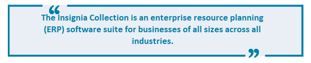 The Insignia Collection is an enterprise resource planning (ERP) software suite for businesses of all sizes across all industries. The suite will be a one-shop stop that encompasses a wide range of applications such as Sales, Financials, Inventory, databases, and storage, to name a few. In addition, they will provide a central point for all applications that can be bundled together for a discount, with an affordable monthly fee.The suite of applications is designed with modularity and expansion in mind, so businesses can extend their subscription to include other applications that will work straight out of the box as a company grows. This will work by utilising cloud services such as data storage so that all applications will use the same methods to read and write data. When the data is updated, there will be a service layer that can notify the other applications running, so the information is always live. The Insignia Collection will require an internet connection as data and subscriptions will be cloud-based.
The suite of applications will be available across multiple platforms, accessible wherever a user has internet access. In addition, the suite will provide cloud-based services with a subscription-based payment, and as their business grows, they can add on or take away different services as the business demands.
Motivation
There is a clear opportunity in for financial reward by building an ERP that aims to assist in building in successful businesses around the globe, with 50% of companies acquiring or upgrading their existing ERP systems in the near future and with 37% of ERP systems implemented requiring significant customization to become usable, we have the perfect window to develop an ERP system that isn’t a hassle to set up or maintain (Biel 2022). There are some products already that offer a comprehensive suite with terrific integration (a few noted below), however they usually bring the pain of expensive monthly pricing as well as functionality that is irrelevant to many users (Apagen Solutions 2020). The Insignia Collection is designed to eliminate these pains with an easy to use, modular system, with an affordable price point. This will allow us to not only gain financially, but to also give back to the businesses that give us their business, by providing them with all of the software tools they need to be able to grow.
Landscape
Below is a range of cloud-based applications and services marketed to different industries and audiences. They range in value for their monthly fees. Insignia Collection is modulated so that we can approach any company. After identifying its needs and concerns, we can design our package to fit their business like a glove. Specialising in low cost, pay only what you use, and yet fully integrated with all the services we offer, both current and future needs.
- eci M1: Cloud-based ERP designed for small to medium businesses in the manufacturing industry, developed here in Australia.
- Microsoft Dynamics: Business Applications that contain ERP and CRM components. Available through a variety of different vendors.
- MYOB ERP: Cloud-based ERP for all financial requirements of your business
- AWS: A cloud-based platform that hosts a lot of different services
- AZURE: A cloud-based platform owned by Microsoft that hosts a range of applications through its data centres.
- Adobe Creative Cloud: Adobe’s new range of applications and cloud-based services are geared towards the multimedia industry.
Plans and Progress
Business Case
As stated in the Motivation section, Insignia believe that there is a gap for an integrated application suite that incorporates machine learning. Our internal analysis has estimated a revenue stream for the proposed product to be profitable. We have determined that the initial offering will achieve enough revenue for the continuing development and support of the product, in addition to having enough surplus to grow the various teams associated with a software corporation. Initial planning and development of the product will require fund raising among venture capitalists. We would propose all members be present for presentations among Australian and possibly foreign investors. The Insignia team have assessed a development time of 2 years to reach minimum viable product (MVP). The fund has to pay salaries for the partners within Insignia, the capital expenditure, which includes computer, networking and storage equipment. As well as operating expenses such as rent, utilities and cloud services.
Click here to download our profit and loss analysis and projections.Description
Aims and Goals
The aim of the Insignia Collection is to offer a collection of applications with seamless integration through the range to offer a simple solution to our customer. By providing a single suite of applications we can offer products across small, medium, and large businesses with a use case for every industry. Listed below are the many goals we will need to clear which will ultimately result in us becoming the premier choice for ERP solutions.
The first step in accomplishing our aim is to create a minimum viable product. This will involve designing and creating a small collection of products that we can then build on and expand, as well as setting up some strong foundations with cloud based architecture so that future development and deployment can be as seamless as possible not only for our customers, but for us.
After completing this we move on to the next goal of securing our first customers. We will conduct market research to find and identify the businesses that not only will help us build on our vision, but businesses that our collection will also help grow. Through these first integrations and solutions we will do some intensive monitoring and testing to make sure the customers are happy with the product, as well as ensuring we are ready for market. Our first customers will be a vital part of a business, and without them we would not be able to progress.
With our new customer base, although limited, we will be able to get feedback on what other applications or software tools they're using (or would like to use) to run their business. With this feedback combined with even further market research, we will be able to continue our development on the suite and reach our goal of increasing our product offering. With the insight of the actual users, expanding our product range is critical for our growth as well as theirs.
As development continues and we continue to add product and test it with our existing users, we will also be able to market the product to new users. Whilst having the smaller offering might have got us started, the additional software and functionality we continue to add will help us reach new areas. By this point we will also need to consider having a dedicated customer support team offering not only technical service but providing quality customer support that we will pride ourselves on. We want to grow, and we really want our customers to grow as well, so getting customer experience right will be an absolute priority that will reward us greatly.
The final hurdle that will help us become the ultimate ERP for all businesses, is profitability. We know the product will be a hit, but we also know it will take some time before we're bringing in profit. With a strong economic strategy, investing in the product and the people who support it, with a strong profit we will be able to ensure we can offer a product, and price, to customers that will catapult us to the top of the market.
The ServiceThe Insignia Collection is an ERP software suite, offering businesses of all sizes a wide range of
applications that are can be fully integrated with each other without the need for overcomplicated
setup. This is Software as a Service, and will require a monthly or annual subscription. Due to the aim
of modularity and affordability, customers are able to purchase subscriptions for individual products or
bundles of applications, or the entire collection. The service will provide a secure backend
infrastructure hosted on Azure infrastructure which will be explained further below. This will give us
the ability to service customers from any location in the world with the lowest latency possible,
however it does also mean the customer will be reliant on an online connection, and we will be heavily
reliant on the uptime of the infrastructure provider.
When a customer purchases their first application subscription, an environment for their data will be
created. With this environment, all of the applications in the suite will be able to interface with each
as a web hook on the databases will notify the applications whenever relevant information has been
updated. After the first purchase, a portal will be available online providing the customer an admin
portal, providing a dashboard with information about their services and their business information. The
customer will be able to add their own employees through this platform, allowing them to self-manage who
has access to their applications, and even who has access to certain functionality within the
applications.
Cloud Infrastructure and Database Design
Cloud Infrastucture
The infrastructure that will be implemented for the Insignia suite of applications will be cloud based. This will allow for the advantages outlined below:
- Greater flexibility to scale out as the business grows
- Cloud based server architecture allows for a scalable model where the infrastructure can be small at first, and then increase in size dynamically as the business user grows
- Onsite based infrastructure in comparison forces the business to scope the size of the prospective business at a point later in time. If the business does not use the capabilities of the infrastructure, it is a waste of money. If the business outgrows the capabilities of the infrastructure, there will be a costly upgrade process.
- CAPEX vs OPEX cost model
- Capital expenditure forces the business to pay for the upfront costs of procuring the infrastructure at the outset.
- Operational expenditure allows the renting of the infrastructure so that the costs are smaller upfront and gradually increase over time as the business grows
- Maintenance efficiency gains
- As the cloud service provider is responsible for the architecture depending on the service model chosen. It allows Insignia to take advantage of the provider’s expertise to maintain the hardware, platform or software. For example, the Azure SQL provides an Azure SQL managed instance where the provider maintains the hardware, operating system and Azure SQL. In short, it is a fully managed service. It allows Insignia to focus on the applications, data and the business.
- Security
- We can leverage the expertise of Microsoft to maintain and keep secure the security of the infrastructure.
- Although Insignia may seek the services of a security expert, the fact that Microsoft will maintain the cloud infrastructure allows a large part of the security overhead to be the responsibility of the provider.
- Performance
- Due to the datacentre hardware available, the performance possibilities is much greater than almost all single businesses can provide individually.
- Services such as load balancing, allows multiple servers to provide business applications the ability to perform as well as when 1 user uses it, vs 1000 or 1,000,000.
- Infrastructure available for high performance computing, such as networking, compute and storage allow a great degree of scale.
- Microsoft Azure has datacentres across the world. This allows for greater performance, reach and low latency for customers all around the world.
- Resiliency
- Resiliency means that in the case of rain, hail or shine, the service needs to be working 24/7.
- In the case of cloud services, it can be designed that in the event of hardware failure, a failover or redundancy is implemented, ready to handle the load of the business services.
- Microsoft Azure has the resources to provide services globally.
- Within the Australia region, there are 3 regions available. Of which there are 3 availability zones to allow for service continuity even in the case of a catastrophic force majeure event at any of the sites. Ie. Earthquake, flood etc.
The Azure cloud platform has been created and configured. The below shows the basic configuration, application servers and database entities within the infrastructure. The Resource Group is the container for the application servers, SQL, and other resources within the pool. The Resource Group is learn-446161fa-f69a-46dc-a14a-9f202800eba4.
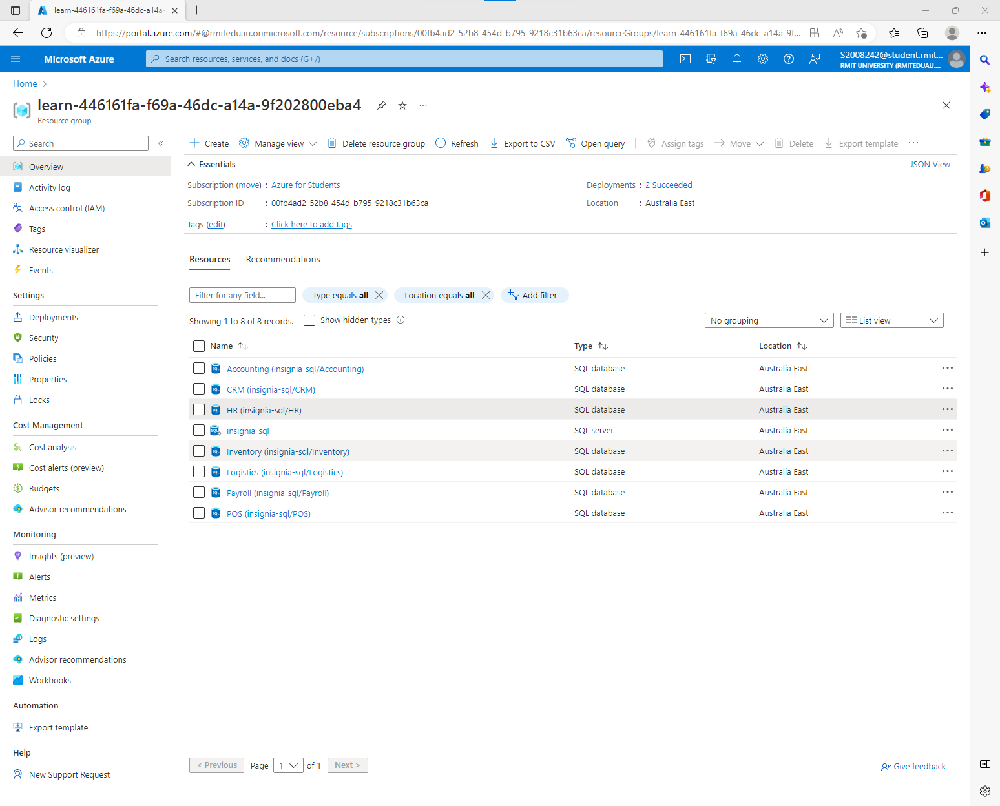The Insiginia applications will run on a the Azure web service. It is classified as a platform as a service (PAAS). This means the servers, networking, storage and web hosting platfiorm is provided by the cloud provider. Insignia is responsible for the applications that run on it.
The SQL server within the resource group is insignia-sql. It is classified as database as a service (DBaaS). This means the servers, networking, storage and software is maintained by the cloud provider. Insignia is responsible for the SQL Server configuration such as the database and table design and backup tasks. An example SQL database that is hosted in insignia-sql is the HR database.
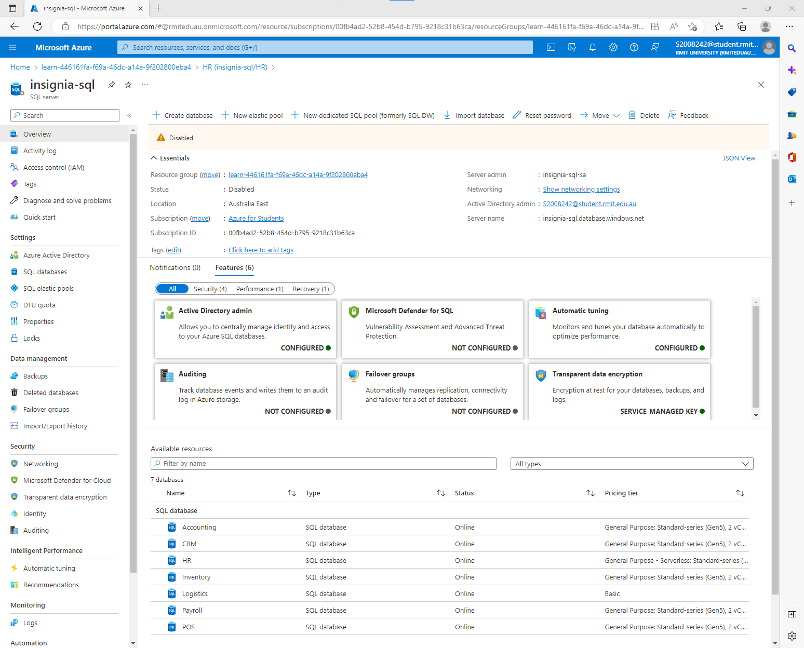Database Design
Each of the 6 applications will have its own database (with Inventory/Logistics being combined for the Inventory module). For the example HR application, a set of tables have been created and defined. Columns, primary keys, foreign keys and relationships have been defined in the example as shown below: 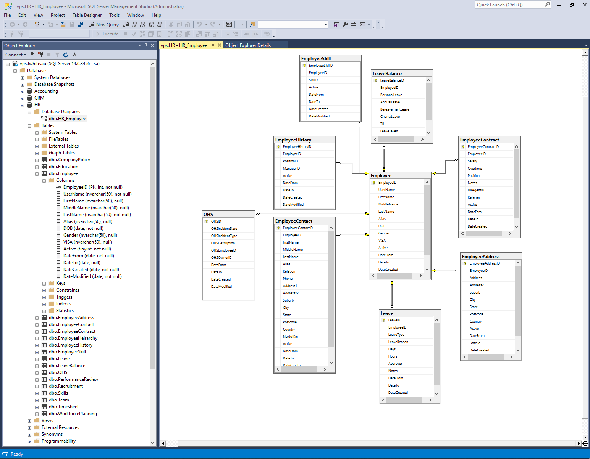
The Applications 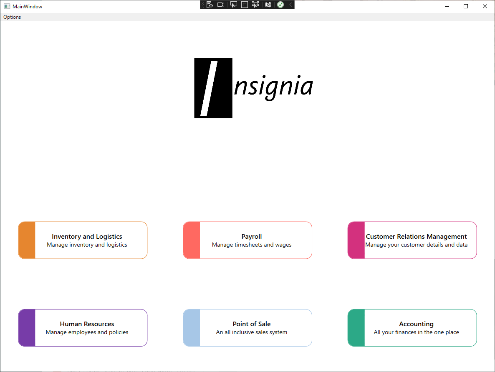
Whilst development has begun on the launcher as per the screenshot above, the following applications are what we would like to offer when we launch. Whilst there are definitely more applications we would like to make, we believe that as our company and userbase grows we will be able to take on user feedback as well as market trends and gaps in the market to make additions to our collection as we see fit.
Human Resources
A modern HR system can benefit an organisation and individuals. It is widely recognised that the most important asset an organisation has are it’s individuals. Empowering individuals, teams and making the most of them allows an organisation to gain the most productivity and stability possible. HR systems can assist and enhance the management of employees from onboarding to personal development that aids the employees and organisation in the long term.
A 2019 report from Sierra-Cedar, showed that in a survey of 1,892 organisations, with 22.2 million employees, showed that there was an increase of 20% of respondents who view HR functions as contributing strategic value, with executives 25% more likely to view HR as strategic compared to HR directors or managers.The value of a HR system relies in on its efficacy and enabling an easy to use and empowering system that integrates all elements of an individuals path to grow with the company. Forrester Research ‘found that only 41% of global software decision makers say they’re satisfied with existing HCM products’, while ‘56% are looking at alternate products’. More than 70% of companies in the Sierra-Cedar report had already deployed at least 1 cloud HR application, and the new buyers expect a software as a service / cloud option.
Of note in Figure 17 below, is the 59% increase Talent Management spending and 35% increase in HR Business Intelligence spending. This is extracted from the 41% of organisations polled that are increasing their HR technology spend.
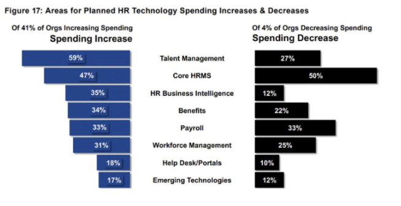The Insignia HR application module will be an integrated, self contained and all in one application that services the Human Resources needs of an organisation. It will allow efficiency gains throughout the end to end business processes. Some examples include the integration with Payroll, POS and the rest of the ecosystem so that it allows efficient running of a business without time consuming duplication of data.
Many different functions are available in the HR module. The various functions will be organised into modules. The application map is shown in Appendix 1 below. It will allow the onboarding of a new employee and chart their course through time and organisational changes. It will allow the growth of the individual, through measures such as Education, Promotions, and Performance narratives. In addition to this, it will follow the industry laws, regulations and guidelines in terms of employment hours, tracking timesheets, and allow the posting of OH&S documentation, company policies, and job vacancies. Leave application, approvals and tracking history with leave balance calculations are part and parcel of the core system. As the functions are broad, there will be a discussion on the licensing scheme. Potentially there can be a base HR license, modular licenses for functions and full feature system license.
HR Appendix
- Home
- Inbox
- My Profile
- Demographic Data
- Employment Contract
- Employment History
- Payslips
- My Leave
- Leave Balances
- Leave Requests
- Leave Calendar
- Leave History
- My Team
- Team colleagues
- Department details
- Manager / Direct reports
- Organisation Chart
- Team changes
- Team work schedule
- Process Leave requests
- Education
- Courses
- Course enrolment requests
- Facilitator
- Training providers
- Education History
- Performance
- Goals
- Reviews
- Past Reviews
- Manage Reviews
- Timesheets
- Complete timesheet
- Daily summary
- Verify timesheet
- Templates
- Roles, Positions and skills
- Roles
- Positiosn
- History
- Skills
- Recruitment
- Agencies
- Vacancies
- Applications
- Request new employee
- Skills match
- Post Internal
- Post External
- OH&S
- Checklists
- Report Incident
- Manage Incidents
- Corrective Actions
- Reports
- Leave reports
- Performance review
- Timesheets
- Workforce Planning
- Development plan
- Succession planning
Inventory and Logistics
In a report released 21st June 2022 by the Council of Supply Chain Management Professionals, it was noted that business inventories dropped but the costs of storage and handling increased, e-commerce sales grew, and trucking freight continued to see more volume and opportunities. This highlights that businesses need to ensure they have a complete solution when it comes to the management of their inventory and logistics, and this is where the Insignia Inventory & Logistics management software comes in. Our full featured application can help a business manage every aspect of their inventory and logistics requirements. With features like seamless integration with couriers and delivery partners, clients can have peace of mind that all incoming or outgoing freight can be easily tracked or consigned without any additional steps. It will automatically keep track of stock levels in real time when items are received in or are incoming, being sent out, or reserved in a pending transaction/order to ensure you always know exactly what your inventory looks like. The As a standalone application, the Insignia Inventory and Logistics management software will take care of everything such as inventory management, order management, warehouse management, freight management and transport planning, stock projection and forecasting, order picking and packing. It can be connected to a client’s e-commerce space so that their website has access to their stock availability, and orders can be easily fulfilled without needing any manual input between the two.
When combined with other programs in our application suite, a client will be able to expand the
abilities of this software. When used with our POS software they will have a fully connected system
that will allow items to be easily ordered in for a customer if its currently not in stock. With
full access to see what stock is available, where it can be ordered from, or even expected freight
times a client will be able to take full advantage of our POS system. Coupled with our accounting
software, a client can easily have supplier invoices loaded for payment or have purchase orders
created to place orders. Forecasting and stock projections can be used with our HR software to
ensure that staffing requirements are planned accordingly, or used with our CRM software to assist
in marketing campaign timeframes.
The Insignia Inventory and Logistics management software is a
must have for businesses that want an easy to use, feature packed program that can look after all
their needs.
Point of Sale
The Point Of Sale system offered in the Insignia collection is feature packed and can be used as a standalone application or combined with our other software offerings to increase its abilities. With its robust features, the Insignia Point of Sale software can suit almost any business, and with its intuitive design it will enable clients to efficiently process sales. A report by Grand View Research (2020) found that the global POS market was valued at USD 9.26 billion in 2020 and was expected to have a compound annual growth rate of 9.5% from 2021-2028. This report also showed that fixed POS systems make up more than 55% of the POS market revenue. We believe that our Point of Sale software, with its competitive pricing, will enable us to break into this growing market.
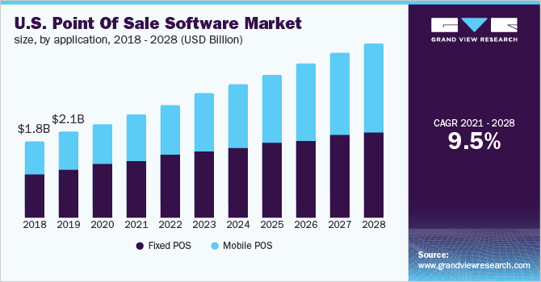As a standalone program, the Insignia POS system will enable clients to not only process sales/returns, but search items to get details about them for their customers. Clients will have the ability to add information to each item in their product library so staff can search it to find specific information on them. Clients can allow their customers to choose multiple methods of payment per sale, so a bill could be split or paid for using cash and card. To make cash handling easier the software will display the change to be given when an employee enters how much was tendered. In the case of split payments, the system will require all chosen methods to add up to the total so that there is no risk of over/undercharging a customer. A receipt/tax invoice will be produced for every sale and can be either printed or emailed to customer.
Clients can also save basic customer information in the POS system so reservations can be made, or special orders/pre-orders can be placed. Using our CRM software a client can expand greatly on the information they can gather and what they are able to do with this information. Receipts/tax invoices, order history and any loyalty program information can be saved to a customer’s account using the POS and CRM software together.
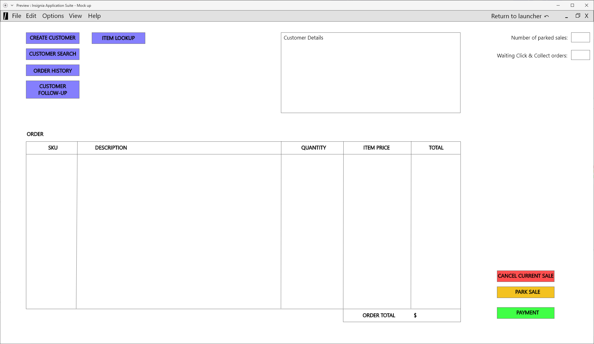When linked with our inventory and logistics management system, it will allow the client to see stock on hand, incoming stock, stock available in their warehouse, stock at their other sites or whether the item is discontinued or just unavailable. This integration will also allow stock figures to be updated live across all sites and warehouses when sales are processed or replenishment stock orders are made.
When combined with our accounting software, clients will have the ability to attribute a sale to a customer’s account for invoicing. This software will also make it easier for a client to manage GST or other relevant taxes, and easily reconcile all sales and accounts. While the POS software will be able to create simple sales reports, combining it with the accounting software will allow detailed sales reports to be generated that can include any number criteria.
If a client has our HR software, they will be able to review detailed sales data and reports for each employee they have enrolled in the POS system. This is especially helpful for any client that requires this information for employee KPIs.
The market for point of sale systems is quite varied which is why the Insignia POS will be able to be customised to suit multiple business models. The report from Grand View Research (2020) shows that the businesses that make up the largest share of the Point of Sale software market are restaurants, hospitality (hotels etc.), healthcare, retail, warehouses and entertainment. The core of our application will remain the same, but the interface can be changed to suite the business that it will be deployed in. Upon initial launch the POS system will mainly focus on retail and restaurant settings, however further updates will be made to allow the POS software to work seamlessly in any number of industries.
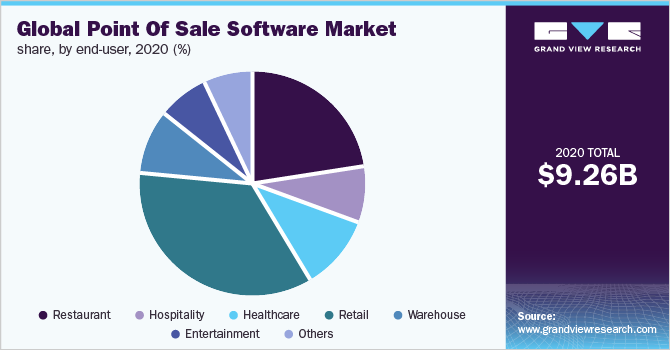 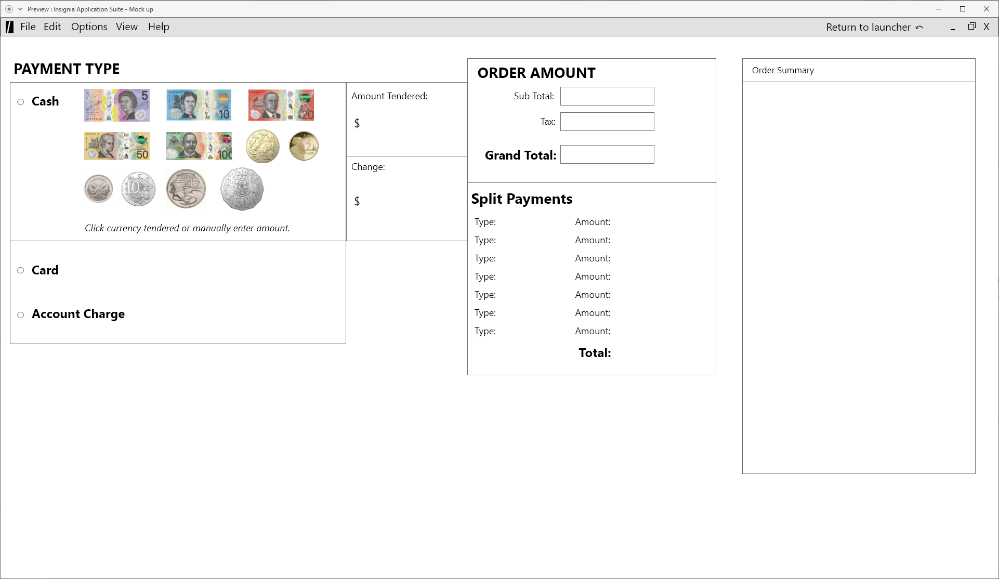 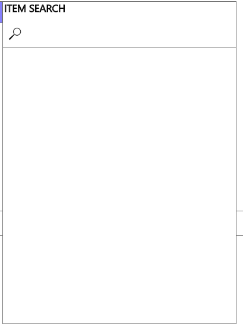Customer Relations Management
The CRM software available in the Insignia Suite will allow a client to fully manage all interactions with their customers, as well as produce detailed reporting using the data they have available. It will have the ability to manage data collected from multiple sources, whether its from another application in the Insignia Suite or from an external source such as social media or website. In an article by CRM.ORG (2022), they estimate that between now and 2028 the amount of businesses adopting a CRM system will steadily increase by 12%. This equates to around $129 billion dollars. With such a large growing industry we believe we will be able to position ourselves to take advantage of this growth by offering our application as both a standalone option and as part of the Insignia Suite.
Our CRM software will allow a client to have their customer phone services/call centres, customer emailing, webchat/livechat, or instore interactions all connected through the program so that all data can be collected without any manual input. This will allow our clients to easily capture customer data, keep a record of all interactions, and build a complete profile on their customers. When coupled with our POS software it will also allow for customer sales data to be captured. With the programs ability to email customers, our clients can create specific and targeted EDM marketing. When connected with our accounting software, clients can track their return on expenditure for things like marketing campaigns etc. to make sure they stay within budget.
Many types of reports can be generated by our CRM software, such as sales forecasts, sales funnel reports, sales by customers, profit reports, marketing campaign reports, email reports and more. All reports have the option to have filters added and can be sorted by selected criteria as well.
When connected with our Inventory/Logistics Management software, clients can use the data and reporting created by the CRM software to create more accurate stock planning and forecasting.
Our full featured CRM software will help ensure our clients can provide their customers with the best experience through every step of their interaction, while also being able to produce valuable and meaningful data from these interactions.
Payroll
While the payroll system may not be part of the first rollout it will be a core application of our core application. The payroll system offered my Insignia will be a simple set up process and haste free using it will one of several apps that Insignia has to offer. The process is really simple as you get a new employee you fill out all the employee’s details and it’s stored on our cloud based service which you can have access to at any time when you need it. The payroll system does all the hard work for you once the employee has entered in their hrs of work for the day or week how ever you would like to have it set up, you will be able to see how much everyone has worked so far for that week and how much their will be getting paid. The employee can check with limited access to see how many hrs they have worked for that week also see how much annual leave, sick leave and long service leave they have and can also request time off or any other days off they need thru the app. It can calculate wages, taxes and super contributions all in the one system. Doing payroll can be a nightmare and a big job that’s why we offer a simple easy way to do pays our direct deposits systems lets you do the weekly payroll and which one touch of the button it gets directly deposited into people’s bank accounts. You will be able to generate reports based on several filters depending on your choice either day or week to see how much of your profit is going towards pays, see how much leave people have, sick days left and super contributions.
If your new to the payroll world or are a little bit scared that you might be in over your head, we offer support to all our clients if they need to just get things up and running or any issues, they come across that they can’t fix.
When it’s integrated with our apps it will greatly improve by our other supporting applications it will be able to talk to the account applications at the end of, they day you can see how much money you have spent of wages vs how much profit you made on that day to see if you need more people on or less. A lot of companies outsource they payroll to other software and service providers it has risen 8% over from 24% in 2018 to 32% in 2019 according (to the 2019 payroll benchmarking report ) it makes sense to free up time inside the business and anyone who was working on it at the time as it’s not a core functions of their operations but here at Insinga we offer a very simple and quick payroll system that puts your mind at ease with a few click here and here and payroll is done
Accounting
Whilst the accounting software will not be available in our early access previews, it will be a core component to our application line up. In a study by Mordor Intelligence (2021), demand and growth for accounting software is predicted to be the highest in the local Asia-Pacific market. By creating a feature rich application that can work as a standalone application or as a key component in an integrated environment, we anticipate that we will be able to ride the momentum of the growth and position ourselves with firm footings in the market. As a standalone application, customers will be able to use the application to completely manage and control their finances. Customers will be able to see their cashflow and create budget summaries allowing them to plan their finances. There will be an option to create a stylised report of theses summaries containing the customers letterhead and all of the relevant information which can be printed or exported to PDF to be emailed. Submitting and paying invoices from suppliers and service providers will also be possible through the software, allowing the customer to keep digital records of everything and use the information from the invoice to work out things like how much tax has to be held or paid, and which accounts the money is coming from. Even setting up payment terms per supplier will be possible, so that invoices can be processed the most efficiently. The software will also feature automatic bank reconciliation to remove the extra work. The software will also allow for the import and export of data so that it can be given to other accounting services, or so that customers in the financial sector can work on data provided to them from other software. To keep costs down 41% of small business owners tend to do all of the accounting on their own (Brown 2019), by providing all of this functionality we are able to approach a huge market and provide powerful tools to reduce their workloads.
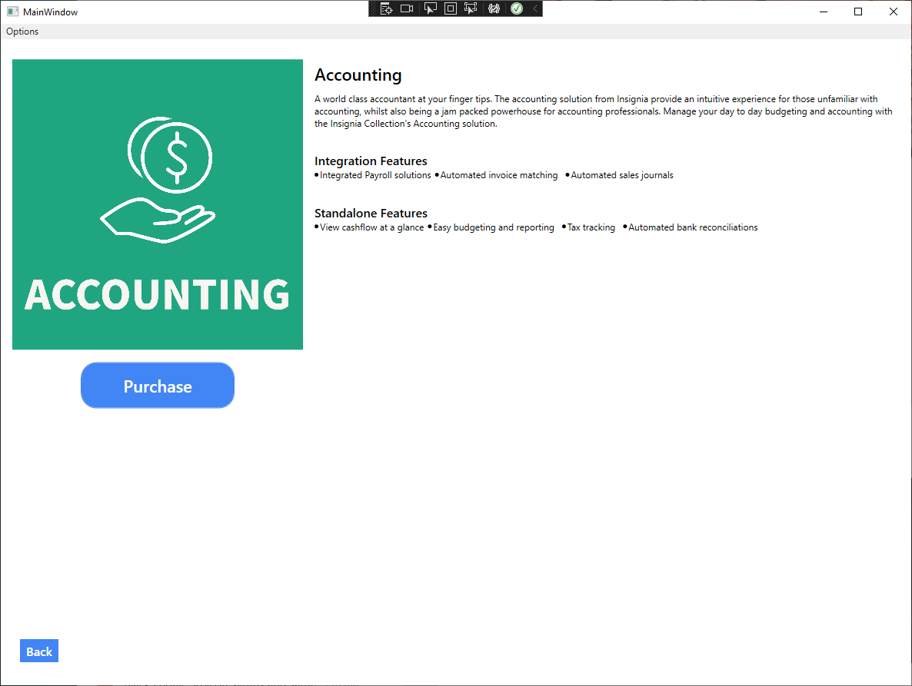In an integrated environment, the accounting software will still have all of this functionality however it will also be greatly improved by its supporting applications. With the payroll application for example, the accounting software will be able to see the roster and provide real time updates to the budgets. With this integration the accounting software will also be keep track of PAYG taxes and any other relevant payments like HELP fees. When sharing an environment with the inventory management application, invoices can be held until they are considered received to ensure goods were delivered. If the customer is using the point of sale software, each sales invoice can credit and debit the correct accounts automatically reducing the manual work required. All of these modular options enable the customer to fully create an environment tailored to them, providing them with the functionality they need to reduce the complexity in not only the configuration of the software, but also the overall operation of their entire business all without huge overheads.
Roles
Due to the nature of the project, we found it fitting to create roles so that everyone was aware of the task at hand and knew how they should be contributing. As System Architect, Hermanto was responsible for infrastructure, databases and frameworks. As the Interface Designer, David was responsible for designing the interface for the suite before passing them on to Leigh to develop them as the Lead Developer. Research and analysis into the product offering would be conducted by Craig as the market researcher, and as the system rolls out, Adam being the System Administrator would be responsible for maintaining and managing the system.
Scope and Limits
Audience
The Insignia Suite will be aimed at small to medium sized businesses looking to use a complete ERP
system that will accommodate and aid the functions of a modern business. We aim to service sole traders,
to partnerships and from small ~10, to medium ~10,000 sized businesses. The customer will be able to
specify and subscribe to each module as required.
Product philosophy
We aim to provide a complete software suite that addresses the needs of the customers.We will adhere to
the following principles:
- Security – security and privacy is our top priority
- Stability – our applications need to be stable and trustworthy to our customers
- Speed – our applications provide the answers quickly
- Consistency – our applications will not deviate far in design and workflow
- Evolution – our products will continue to improve
Products and Deliverables
One Framework Application
- The Framework of the suite will be available on the Microsoft Windows desktop via a desktop client and integrate with the cloud server resources.
- It will also be available as a web application, with a dynamic front end that can be used on multiple types of devices such as Windows desktop, Linux, Mac desktop, iPad and mobile.
- Change requests for the application that is required quicker than the biannual feature add schedule, will be paid for by the customer requesting it. The change will be available for all customers.
- Change requests that are lodged, will be prioritised by the number of customers requesting it. Depending on the resources required and the schedule available, the most requested features will be developed, tested and implemented. There is no set quota as changes will differ based on effort.
- Human Resources
- HR system will function as an all in one HR software system for a small to mid size company ( < 10,000 employees). It will integrate in other modules such as Payroll.
- Invenotry and Logistics
- Inventory/Logistics will function as a customisable platform to accommodate the needs of multiple warehouses and multiple delivery capabilities and integrate with POS and other modules of the Insignia suite.
- Point of Sale
- POS will allow functioning of a sale system both in person, online, and integrate with the IL module and accounting for invoicing.
- Customer Relations Management
- CRM will function as a platform to track customers purchases, orders and issues, as well as be a platform to offer sales opportunities to new customers.
- Payroll
- Payroll will function as an all-in-one Payroll software function. It will integrate with the Australian Tax system (Pay Summaries), and incorporate up to date taxation rules and provide payslips etc.
- Accounting
- Accounting will function as the ledger for customers and suppliers.
Interconnectivity of the applications using shared data model, for example when a user creates an employee within the HR application, it will appear as an entity in Payroll. Create a Customer Relations supplier and it will appear as a searchable supplier in accounting. Add a record in Inventory and it will be available to sell in Point of Sale. Function of the importation of master data can be scoped in phase 2.
Data can be imported as CSV. Columns will be selectable to integrate with DB with the minimum columns required. Application will be written in C#. Developed in Visual Studio. This language can be implemented into various cross platform devices. This is to aid distribution and availability in Windows Desktop and web frontend.
Upgrades and Updates
Major versions definition will be feature enhancements that change framework of the system. It will be
in co-ordination with all versions of the software modules so major versioning are in sync. Major
updates will be scheduled annually and released in Q2, this will be similar to Adobe Suite’s structure,
for example Adobe Suite 2022 to Adobe Suite 2023.
Core update definition will be feature enhancements and bug fixes and aim for it to be Q1 and Q3. Core
update will be in co-ordination with all versions of the software modules so core versioning are in
sync. Similar to how Microsoft provides updates to Windows, for example Windows Update 2022H2.
Minor update definition will be independent of each module and incorporate bug fixes.
Critical security fixes are to be tested at highest priority in TEST environment with basic testing and
implemented in PROD within 1 day. Critical bug fixes are to be tested at high priority in TEST
environment with moderate testing and implemented in PROD within next update opportunity. Nominally this
will be out of band and can be implemented within 1 week.
Mid level security fixes are to be tested at high priority in TEST environment with basic testing and
implemented in PROD within next update opportunity. Mid level bug fixes are to be tested at mid priority
in TEST environment with enhanced testing and implemented in PROD in next update cycle. Update cycle
will be monthly.
Low level security fixes are to be tested in mid priority in TEST environment with moderate testing and
implement in PROD in next update cycle. Update cycle will be monthly. Low level bug fixes are to be
tested at low priority in TEST environment with moderate testing and implemented in PROD in next update
cycle. Update cycle will be monthly.
Feature enhancements are to be tested with low priority in DEV environment with enhanced testing and
implemented in PROD at next core update cycle. Update cycle is bi-annual.
| High Priority ASAP |
Medium Priority Monthly |
Low Priority Biannual |
Change Request Annual |
|
|---|---|---|---|---|
| Security | X | |||
| Bug Fixes | X | |||
| Core Updates | X | |||
| Major Version Update | X |
Limitations
Programmatic:
Within the ERP application framework, limitations will include all updates will only
fix
issues until the next feature update which is scheduled bi-annually. Major versions ie. V1 to V2 will
include new features and framework changes. Customisations for large clients will incur additional
maintenance costs.
Legal:
All data from the region will be held within the regional datacentre. All data will be
encrypted
so that Insignia will not be able to read data. No governmental access. EULA will be available within
the application. As the EULA can be changed dynamically.
Liabilities:
Limited liability for Insignia. SLA breaches of downtime will incur reduction of fees
but
will not incur damages. Loss of data may incur additional damages and will only be at the highest tier
subscription. However, triple redundancy and backups will only be provided for the highest tier
subscription.
Tools & Technologies
The Insignia Collection will be built on and depend of a wide range of tools and technologies. From open source software, to cloud based hardware. Whilst the Insignia Collection will begin it's life relatively simple, there is a plan to remove some of these third party dependencies and replace them with in house solutions where possible. Below you'll find the list of these tools as well as the experience some group members may have had with them.
Licensed Software
- Adobe Photoshop 2023 v24.0
- Adobe Photoshop has been used by many of the group members, and for different reasons. Hermanto has used it for photography work over several years, whilst Craig, David, and Leigh have used it for image manipulation and design.
- Adobe Premiere Pro 2023 v23.0
- Premiere Pro is a tool that has only been used by Hermanto for the creation of media in historical bodies of work for Insignia. (A2)
- Adobe Lightroom Classic v12
- Lightroom Classic is another tool familiar to Hermanto, having used it for over a decade managing family and studio photography.
- Adobe XD v55.1.12.7
- Although limit in experience, David has used Adobe XD to design prototype mockups of the suite.
- Microsoft OneNote 16.0.15629
- A relatively simple software, Craig, David, Hermanto, and Leigh all have experience with this note taking tool.
- Microsoft Teams 1.5.00.28361
- Again, this is a tool that the team has been using for business communications for quite some time and everyone has a good understanding of the tool.
- Microsoft Project 2019
- Another tool with experience unique to Hermanto, he has been using it to manage projects for years.
- Microsoft SQL Server Management Studio 18.12.1
- Hermanto has managed databases professionally for many years using this tool.
- Visual Studio 2022 17.3 (or later)
- Leigh has been developing with Visual Studio and it's eco system for over 10 years.
Open Source & DRM Free Software
- GIMP 2.10.32
- When not using Photoshop, Craig, Hermanto, and Leigh have a limited experience wit GIMP.
- Microsoft SQL Server 2017 Express (RTM-CU31) (KB5016884) - 14.0.3456.2 (X64)
- Whilst some group members are familiar with SQL and Microsoft SQL Server Management Studio, nobody in the group has any actual experience with the server side software itself.
- Visual Studio Code 1.72.2 (or later)
- Leigh has been using Visual Studio code for web and simple code development for the past 3 years.
- Node.js 18.12.0 LTS
- Leigh has been using Node.js for the past 2 years as a development environment for front end web design.
Frameworks & Programming Languages
- .NET Core 6.0.9 (or later)
- Leigh has been developing in the .NET environment since version 4.1
- C# 10
- A multipurpose programming language that Leigh has been using for many years, primarily for desktop development.
- Vue.js v3.2.31 (or later)
- A frontend JavaScript framework that Leigh has been using for the past 12 months.
- TailwindCSS v3.2.1 (or later)
- A utility based CSS framework that Leigh has 12 months of experience with.
- SQL
- Hermanto has been using SQL for database work for over 15 years, and Leigh has used it in many projects in the past.
Hardware
- VPS - CentOS v7.9.2009
- VPS used for development, Leigh has many years of Linux and Server management experience.
- Cloud Infrastructure - Azure
- Whilst we intend to have our production running on Azure services, we do not have experience with it currently.
Testing
Software Testing
An important part of application is unit testing, which by definition is the process of individually
testing the functions and methods within an application to ensure they operate as intended at all times.
As explained by Thomas Hamilton (2022), by conducting proper unit testing starts and
continues from the beginning of development it saves time and money by reducing errors within the life
cycle of the software. Fortunately, since we plan to develop the application in C# and use Visual Studio
2022, we have access to some great unit testing functionality within the IDE. Through our early start
and continued efforts with unit testing we will be able to test every part of functional code before it
makes it to production. As well as unit testing, we will also have the following procedures:
- Code Review
- Code reviews should be incorporated by multiple developers and teams (when the development team surpasses 5). This will allow independent analysis and review.
- Regular development meetings should be scheduled to review current status and issues and to allow discussion of topics to focus.
- Testing Methodolody
- Unit testing should involve automated test scripts where possible
- The test scripts themselves should be reviewed according to schedule and updated as required
- Specific testing using unexpected data types, lengths, and behaviours should be performed to try and break the code
- Code Stability
- Testing individual code fragments to ensure it behaves in a consistent and expected manner
- Use breakpoints to isolate bugs
- Ensure the data type is aligned with the specific function
- Testing the interoperability of code modules
- Ensure the data is processed correct and does not allow buffer overflows
- Testing the data is consistent within the single application
- Testing the data flows from one application to another
- Code Stability
- Review code and data inputs that may be vulnerable to buffer overflows
- Review Github and Microsoft knowledge bases to track known security vulnerabilities within libraries and frameworks
- Code Efficiency
- Review code to ensure that the function is as efficient as possible while being legible
- Inefficient code is often difficult to understand and trace the data flow within the function
- Create polymorphic if possible to allow re-use of code
- Code Performance
- Ensure the profiling of code for each code fragment and module
- Ensure the data transactions from the code to the database is as efficient as possible
- Review SQL logs to ensure no inefficient SQL is passed to SQL Server
- Review Database performance and statistics to identify and resolve DB issues before they become critical
- Proactively create indexes or defragmentation schedules to optimize database
- Real World Testing
- Testing should be performed outside of the IDE using the real application
- Testing and Dev environments should be available to run the code using up to date and accurate data
- Pilot releases for customer submitted change requests need to pass User Acceptance Testing (UAT).
- This needs to be managed and monitored to identify issues before the general release of the code is applied to the rest of the customer base
- Management of Releases
- key stakeholders will hold Change Advisory Board (CAB) meetings to discuss and allow release of code changes according to schedule
- Depending on the priority of the change ie. Security vulnerability, this can be performed ASAP or according to standard release schedule
- There will be a sign off for each release and code author will be identifiable to each fragment for constructive analysis
Timeframe
Having worked on the project for the past 5 weeks, and with the intention of continuing for the next ten, our team has constructed the following timeline of work
| Week | Adam | Craig | David | Hermanto | Leigh |
|---|---|---|---|---|---|
| Week 1 - 24/10/22 | Team discussion on what we are all doing | Research into applications | Team discussion and delegation of tasks. | Prepare, design and research content for website | |
| Week 2 - 31/10/22 | Talk about what apps we wanted to include in our program | Draft application UI design and mockup | Research and create profit and loss report. | Start development on website | |
| Week 3 - 07/11/22 | Post job adds for hiring | Draft application launcher UI design and mockup | Design and configuration of Azure cloud resources. | Prepare, and design application mockup based on UI Design input | |
| Week 4 - 14/11/22 | What our main goal/ aim will be | Risk assessment created and team reviewed | Research functions of HR application framework and implement App UI design. | Create and compile a preview launcher based on designs. | |
| Week 5 - 21/10/22 | Application write ups | Application write ups | Design and implement database architecture. | Collate team efforts to put into reports | |
| Week 6 - 28/11/22 | Install and configure software and hardware that we will be using | Take part in interviews for key role requirements | Manage team to complete application framework and backend design. | Further development into creating a codebase to be the foundation of the applications | |
| Week 7 - 05/12/22 | Monitor performance and maintain system according to the requirements set by our team | Start final UI design creation | Collaborate and assist with the integration development. | Integrating database connections to test data control and manipulation | |
| Week 8 - 12/12/22 | Have all the internal equipment set up and start running a few tests with our system | Continue with final UI designs | Review and participate in second round interview process. | Review of codebase and implementation of coding standards moving forward | |
| Week 9 - 19/12/22 | Continue testing all internal equipment and hardware to make sure nothing is missed | All UI designs finalised | Finalise application framework designs. | Half week of frontend development with break for Christmas | |
| Week 10 - 26/12/22 | Break for Christmas | Break for Christmas | Break for Christmas | PBreak for Christmas | |
| Week 11 - 02/01/23 | Check all systems to make sure nothing happened while we had a break | Assist with cloud services/server setups | Review and update cloud infrastructure and database requirements. | Starting back in new year to finish off the front end for an application | |
| Week 12 - 09/01/23 | Collaborate with team on how everything is coming along | Continue assisting with cloud services/server setups | Ensure scope is not breached. Review and update testing methodology. | Beginning of app specific business logic development and integration | |
| Week 13 - 16/01/23 | Have the hardware and systems signed off to say its working to standard | Assist teams to ensure everything is ready for testing the following week. | Collaborate with development team and manage testing. | Further back end development and integration | |
| Week 14 - 23/01/23 | Help with testing services and servers is needed | Help with testing applications, cloud services and servers | Help testing and initiate pilot roll out phase. | Testing and debugging to prepare for beta launch | |
| Week 15 - 30/01/23 | Offer help to anywhere else that is needed in the team | Make any UI design changes/improvements based off user feedback. | Review project status and update investors. | Ship to production and improve/hotfix based on user input in live environment |
Risks
The below table is a list of possible risks that may arise or are associated with the Insignia Collection project.These risks are assessed on their likelihood to occur, and the severity of their impact should they occur. Once a risk is identified and assessed, possible solutions to mitigate these risks are developed with the goal of reducing the level of risk.
The Risk Matrix:
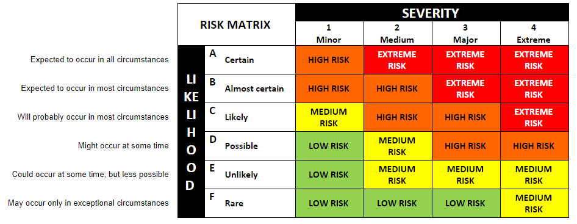The Risk Assessment:
| Risk | Details | Impact | Likelihood | Severity | Risk Level | Actions to Minimise Risk | Revised Likelihood | Revised Severity | Revised Risk Level |
|---|---|---|---|---|---|---|---|---|---|
| Coding issues | While we have team members that have knowledge and experience with coding, the language chosen to write the Insignia Collection could turn out to be more difficult than anticipated. | This could result in delays in reaching a minimum viable product, errors in the program, or missing functionality. | D | 3 | High Risk | Ensure that when we recruit additional staff to work on the project that we include someone with expert coding knowledge in our chosen languages. | F | 3 | Low Risk |
| Meeting deadlines | Certain aspects of the project may turn out to be more complex than expected or we may hit roadblocks along the way. | Not meeting deadlines for different parts of the project would have a flow on effect to other areas and could result in the overall project being delayed. | D | 3 | High Risk | Before deadlines are set, the complexity of the task and potential problems should be considered. Adding extra time than required to each deadline will ensure there is a buffer should something go wrong. | D | 2 | Medium Risk |
| Budget/costs | Costs may exceed our projections. | Any missed deadlines, problems during development, additional staffing requirements, new/replacement equipment needed could cause our budget/cost forecasts to fall short. | D | 3 | High Risk | Ensure that our budget/costings consider the possibility of items that may need replacing if they break or are stolen etc. Clearly defined staff planning to ensure that we have the right number of employees to complete the project within the timeframe. | D | 2 | Medium Risk |
| Project scope | The scope of the entire project is quite large. It is possible that as we are working on the different applications we may revise or expand the scope based off any challenges or feedback. | Expanding or reducing the project scope would have a large impact on any potential clients we may have lined up, any investors/financial backers and the overall product being produced. | D | 2 | Medium Risk | Speak with all stakeholders prior to agree on project scope as well as what any potential increase or reduction in project scope may look like in advance, we can have a plan in place should one of these scenarios occur. | D | 1 | Low Risk |
| Application quality | The application may have bugs or glitches that were missed during testing phases. | This would impact our client’s day to day operations which could have a financial impact on Insignia and the client. This could not only damage clients view on our program suite but impact our brand image and reputation as well. | D | 4 | High Risk | Comprehensive testing needs to be conducted to every aspect of the program suite, both as standalone applications and when interconnected, to ensure functionality and performance. Rigorous stress testing needs to be conducted to ensure our servers can keep up with our anticipated usage. | D | 2 | Medium Risk |
| Cloud provider services | The reliability and potential down time of our cloud service provider. | If our cloud services are unavailable this would impact our clients experience with our programs. | D | 2 | Medium Risk | We may need to look at paying for a higher tier for our cloud services which would increase our costs but would ensure a better service for our clients. | D | 1 | Low Risk |
| Employees/project members | Key project team members or employees could leave. | If key personnel were to leave it could stall the project as it is only small at this stage and not every member has the skills to complete each role. | D | 4 | High Risk | Ensure that no single person is solely responsible for completing an item and that others are also across the details of each aspect of the project. This would mean minimal disruptions to workflow. | D | 2 | Medium Risk |
| Competition | Other vendors both established and new start-ups may enter this cloud-based ERP opportunity. | The increased competition will dilute our visibility in the market and erode profitability. If the competition uses their entrenched position and economies of scale, it may drive us to prolong our development time, or alternatively come out with a premature product leading to poor first impressions. | C | 4 | Extreme Risk | The team will need to be ensure there is an NDA in place so the other companies in the space are not aware of the development. The development needs to be efficient in the project timeframe and balance the feature set as well as the need for stable, efficient and secure code. | C | 2 | High Risk |
| Security of client’s information | Having a lot of information stored in the cloud clients would want to know their information is safe and secured | Client’s details about their company and employees could be stolen | E | 4 | Medium Risk | Give the client a bit of a run down on how we are going to keep their information safe but able to access it at anytime and anywhere when they need it. tell them what security systems we have in place to stop this from happening without giving too much away | F | 4 | Medium Risk |
Group Proccess and Communications
For this assignment and the last one we have set up Microsoft teams as a point of communication between everyone in the group. We can post topics in the chat and upload files to the server where everyone can view and edit them on the go which has been useful over the assignment. We have a weekly meeting set up for every Tuesday around 9pm Melbourne time where we have a meeting agenda set for that meeting which is sent out before the meeting that gives us a idea of what everyone is going to talk about and so on. If we have a group member that isn’t responding to communications, we will reach out and ask them “hey is everything alright just to make sure that are going well we all understand that personal life can get in the way of study.
We all try and come to these weekly meetings as its very important part of the group to talk about issues or just things that need to be done for that week. the meetings normally go for like an hour maybe more if we have a lot to talk about. We are all active on the group chat within teams everybody responds to each other’s posts about what they said.